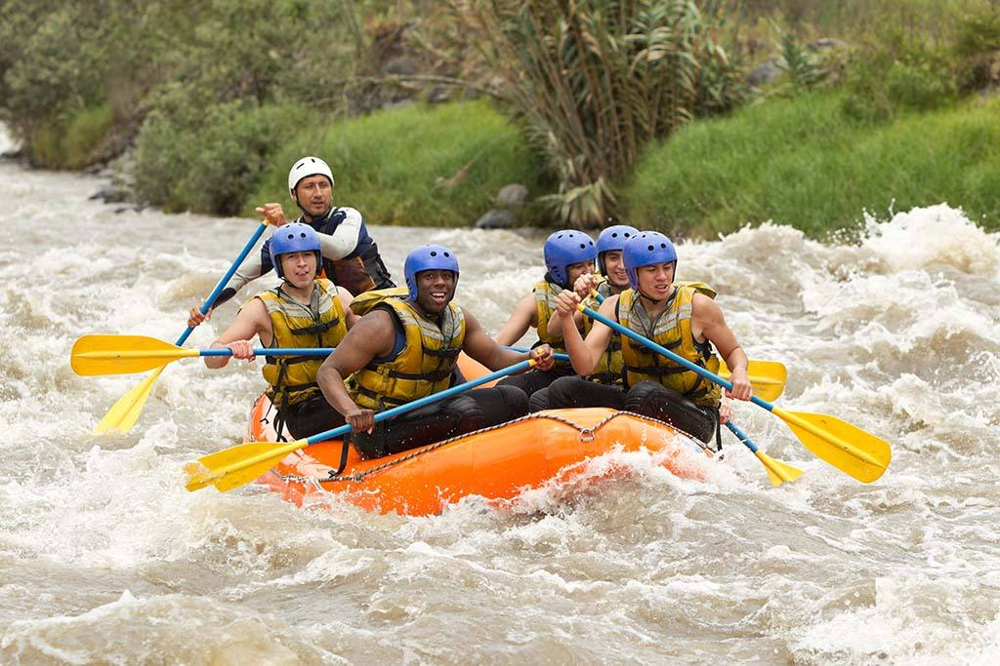

Nossa missão é conectar pessoas à natureza por meio do rafting, proporcionando experiências de aventura, diversão e superação. Na Rio Abaixo, buscamos transformar cada descida em uma lembrança inesquecível, com respeito aos rios, cuidado com as pessoas e espírito de equipe.